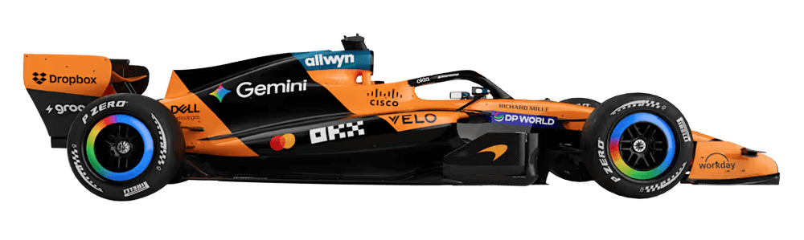
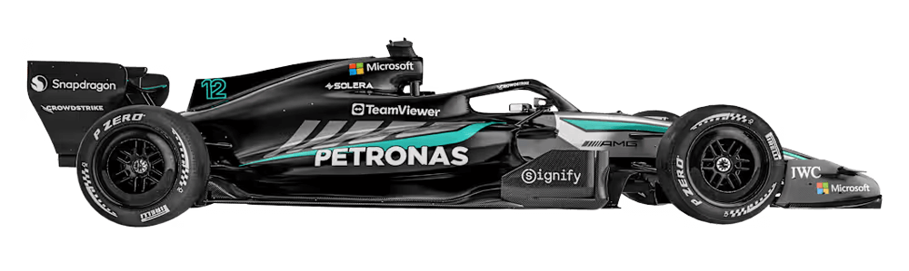
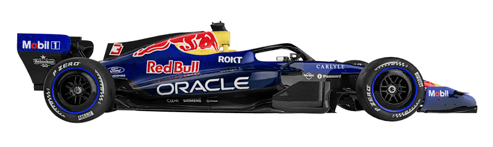
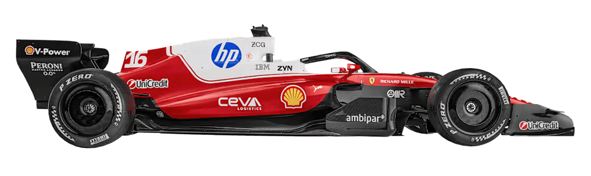
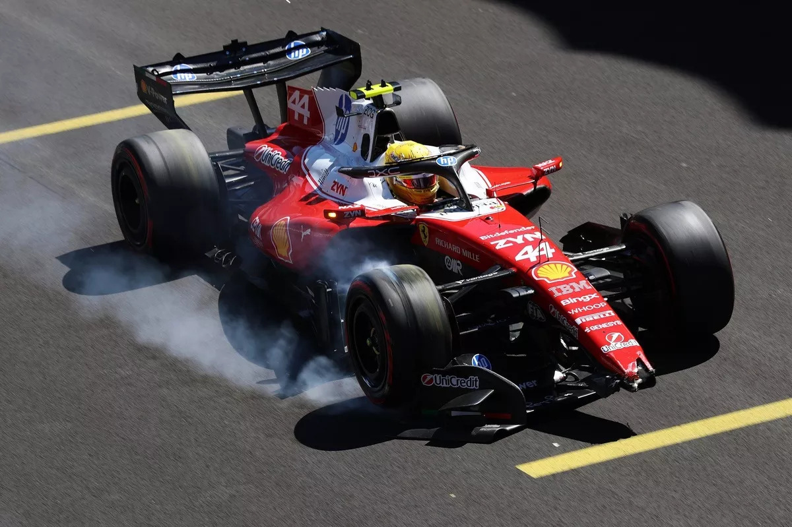

Así es la primera parrilla de F1 de la historia en Madring: filas y posiciones

Lando NorrisMclaren

Kimi AntonelliMercedes

Max VerstappenRed Bull

Lewis HamiltonFerrari
Charles LeclercMclaren
George RussellMercedes
Oscar PiastriMclaren
Lando Norris y Kimi Antonelli compartirán la primera fila de la parrilla de salida el domingo, con Max Verstappen y Lewis Hamilton en la segunda, tras una emocionante clasificación para el Gran Premio de España en Madring.
El campeón reinante de F1 alcanzó una vuelta de 1m31s824 para superar por apenas 11 milésimas al actual líder del campeonato y obtener su 19° pole position en la máxima categoría.
Hamilton causa una bandera roja en la FP3 del GP de Madrid y luego desobedece a Ferrari

Lewis Hamilton sufrió un accidente durante la última práctica libre para el Gran Premio de España de F1 que se disputa en Madring y motivó una extensa bandera roja.
A los 23 minutos de iniciado el entrenamiento, el siete veces campeón mundial sufrió un golpe en la curva de la entrada a boxes del circuito de Madrid, mientras se preparaba para cerrar una vuelta rápida que lo habría depositado en las primeras posiciones del clasificador.
Hamilton pudo retomar la marcha tras el choque, pero se pudo notar por las imágenes de la transmisión que parte de su alerón quedó atrapada en la rueda delantera derecha, que ya no giraba y se arrastraba.
El fuerte accidente de Charles Leclerc que generó una bandera roja en el Gran Premio de Italia de la Fórmula 1
La primera escena de alto impacto en el Gran Premio de Italia de la Fórmula 1 ocurrió en la segunda vuelta de la carrera. Charles Leclerc protagonizó un fuerte accidente luego de que se fue sólo contra la barra de protección tras una lucha por su posición con Oscar Piastri. En un primer momento, los comisarios deportivos dispusieron una bandera amarilla, pero al poco tiempo activar la salida del Auto de Seguridad y luego detuvieron la carrera con bandera roja.
Al momento de la interrupción, Franco Colapinto ocupaba el cuarto lugar, detrás de Max Verstappen y por delante de Piastri. Adelante estaban George Russell y Pierre Gasly, que habían quedado primero y segundo al inicio de la segunda vuelta.